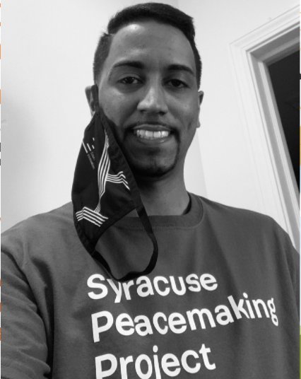

Our team of community ambassador are locals to their respective neighborhoods in the City of Syracuse. They are here to be your knowledgeable guide when navigating housing code enforcement and help you get the treatment you deserve.
Jan-Juba Arway
Jan-Juba is the Northside Community Ambassador. She has worked with numerous non-profits in the local area and had a passion for housing violations against immigrant tenants. Feel free to reach out today!
Email:jarway@courtinnovation.org
Phone: (315)-450-2152
Nyatwa Bullock
Nyatwa is the Eastside Community Ambassador. She is a young and passionate community member involved in a little bit of everything. Alongside her role at Cities RISE, she fights for prison justice, holds an elected school board position, and is a landlord. Feel free to reach out today!
Email: nbullock@communityalternatives.org
Phone: (315)-378-8932
Palmer Harvey
Palmer is the Southside Community Ambassador. She has worked with numerous non-profits in the local area, founded the West-side tenant union and is committed to prosperity in her neighborhood. Feel free to reach out today!
Email: pharvey@courtinnovation.org
Phone: (315)-254-5787

Jose Marrero
Jose is the Westside Community Ambassador. His background in community outreach is centered in the education system where he was a counselor for at-risk youth. He is passionate about lead poisoning in the youth of Syracuse. Feel free to reach out today!
Email: jmarrero@courtinnovation.org
Phone: (315)-450-2141